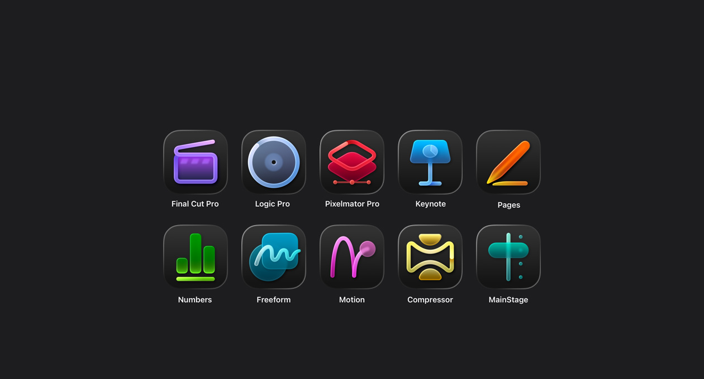
All yours for the making.
The apps you need for everything you want to create. Craft your stories with video in Final Cut Pro. Reimagine images in Pixelmator Pro. Produce your best music in Logic Pro. Supercharge productivity with premium content in Keynote, Pages, Numbers, and Freeform. Boost workflows with AI features that build on Apple Intelligence. And with Family Sharing, up to five other people can enjoy your subscription too.
Try it freeMeet your all-star team of creative apps.
Watch the filmOne powerful collection.
One smart subscription.
New subscriber
1 month free
$12.99 per month or $129 per
year after your free trial.
Students and educators
1 month free
$2.99 per month or $29.99 per
year after your free trial.
New devices
3 months free
Try Apple Creator Studio with
an iPad or Mac purchase.
Final Cut Pro
The ultimate video
creation experience.
Craft with power and precision using Final Cut Pro on Mac and iPad. With intuitive tools designed to elevate every frame, your vision moves from concept to cinematic story at the speed of thought.
Learn more about Final Cut Pro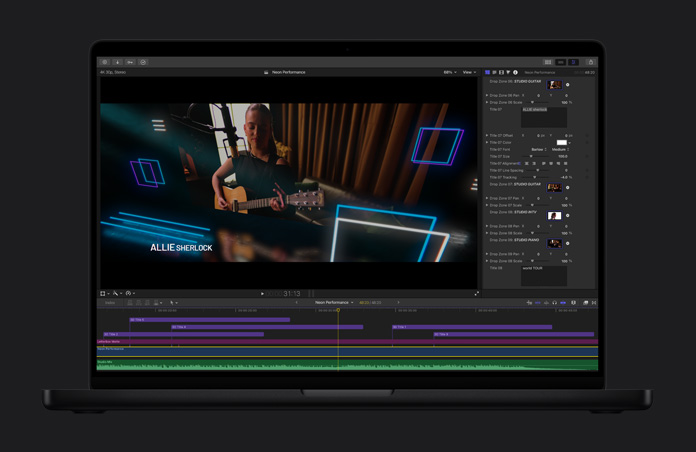
Start-to-finish performance.
Shoot pro-level footage with complete control in Final Cut Camera on iPhone. Then edit on iPad or Mac with powerful and approachable tools and effects, fine-tune the audio, and share your finished story.
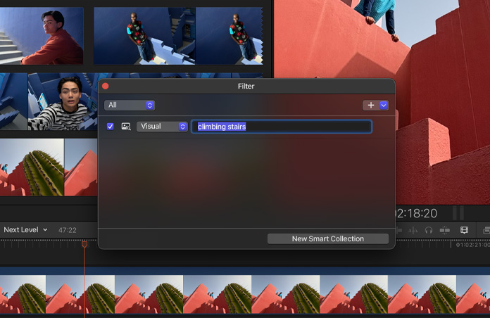
Instantly find the moment you’re looking for.
Track down a shot without scrubbing through footage using Visual Search and locate the perfect sound bite with only a few keywords using Transcript Search.
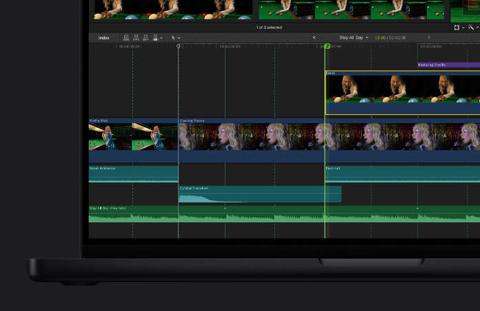
Video editing with speed and flexibility.
The Magnetic Timeline lets you move and trim freely while maintaining synchronization so you can explore endless creative possibilities.
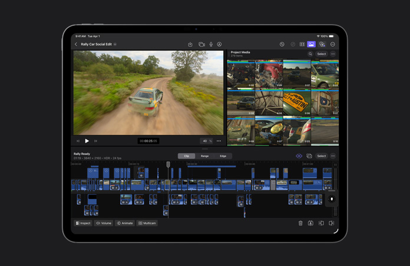
Perfect timing, every time.
Beat Detection matches your music’s rhythm so you can align clips effortlessly and keep your edits in sync with the beat.
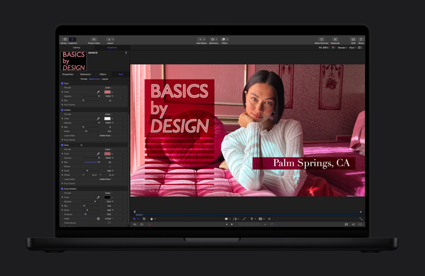
Beautiful, customizable graphics.
Add professionally designed motion graphics to your project with Motion in Apple Creator Studio or select graphics from third-party providers.
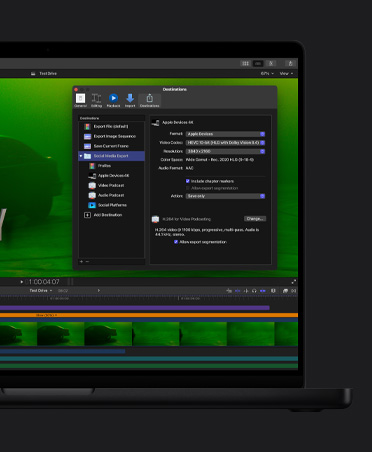
Fast delivery.
Quickly batch export files that are optimized for any size, from your iPhone screen to the big screen.
Pixelmator Pro
Creative imaging and design.
Made for everyone.
Edit and design using intelligent tools that bring your vision to life. From social posts to billboards, Pixelmator Pro simplifies every step of your projects.
Learn more about Pixelmator Pro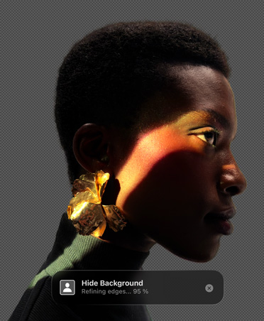
Speed up your workflow.
Intelligent features automate image edits like background removal, image repair, detail enhancement, color adjustment, and more.
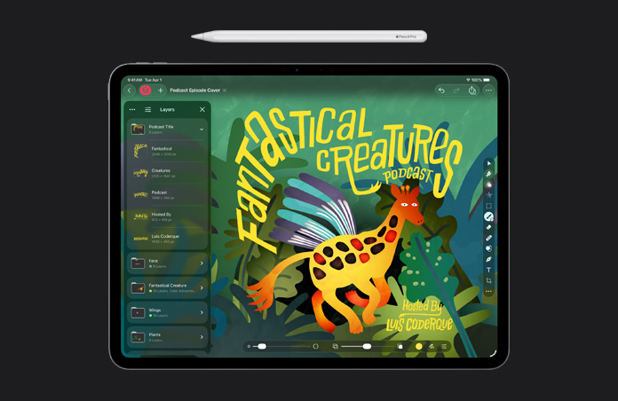
Layering without limits.
Use simple building blocks to create virtually anything you can imagine with nondestructive editing.
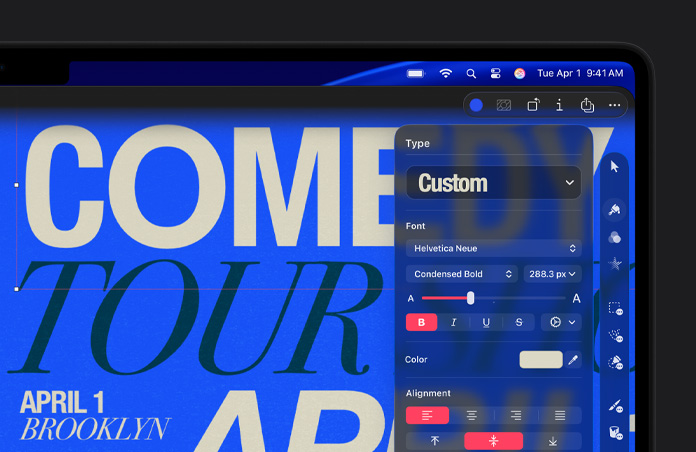
Typographic control.
Use any font and customize your text with everything from sophisticated styles to curved paths.
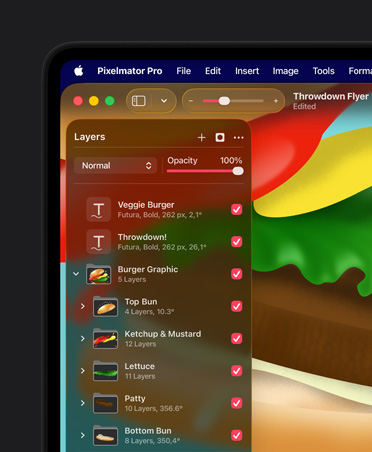
Fully optimized for touch on iPad.
Use natural gestures for fast, fluid onscreen interactions with Apple Pencil precision.
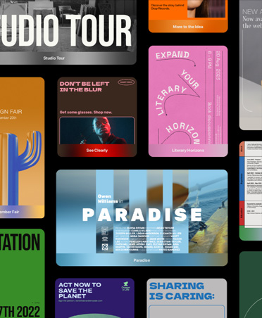
Stunning templates and mock-ups.
Start working from professionally crafted templates and beautiful mock-ups.
Logic Pro
The fast track to the final mix.
Wherever you go.
Create with intelligent Session Players, cutting-edge beat-making tools, and a massive Sound Library, seamlessly across Mac and iPad.
Learn more about Logic Pro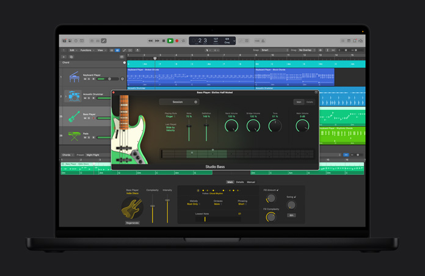
Music production with AI Session Players.
Produce with a full band of musicians that adapt in real time to your musical style.
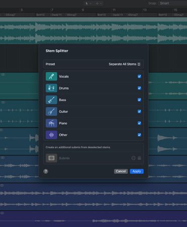
From idea to final master, fast.
Supercharge your workflow with intelligent tools like Stem Splitter and Mastering Assistant.
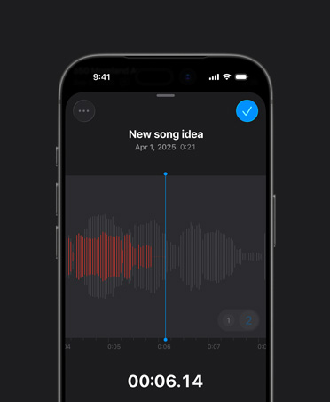
Record drafts on the go.
Voice Memos lets you record anywhere and bring your recording straight into Logic Pro.
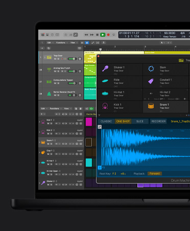
Beat-making tools.
Build custom drum kits and craft the perfect beat.
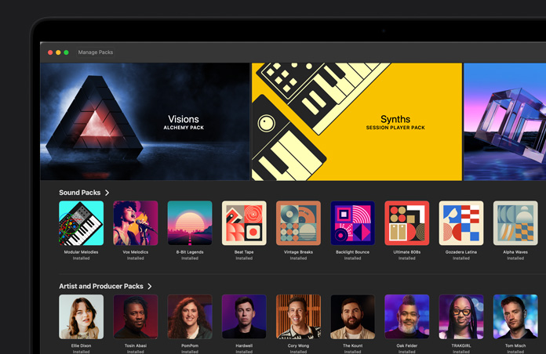
Massive Sound Library.
Get thousands of royalty-free sounds in an ever-growing collection.
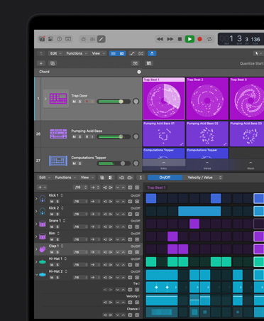
Instruments and effects.
Dial up authentic vintage keyboards or powerful modern synths.
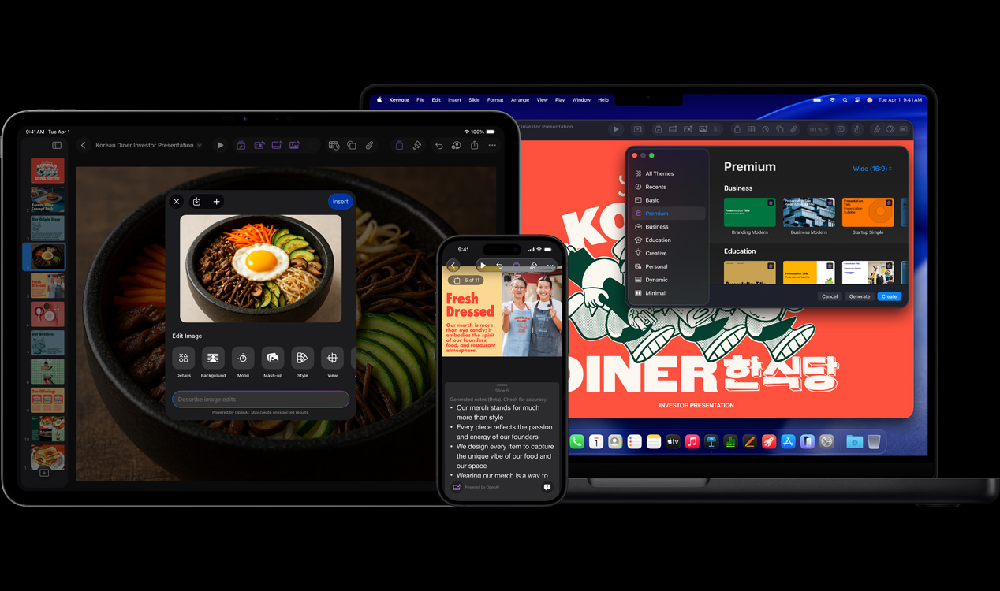
Keynote, Pages, Numbers, Freeform
Go from idea to done.
In a snap.
Powerful features that build on Apple Intelligence help you get more done in Keynote, Pages, Numbers, and Freeform.
Quickly put together presenter notes.
Generate notes for any slide using insights from your entire presentation.
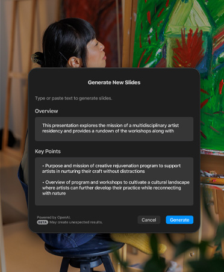
Generate slides automatically.
Keynote can intelligently turn any outline into a cohesive slide deck.
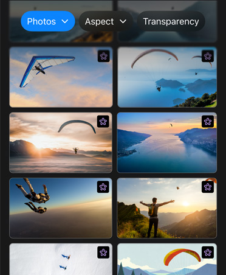
Access high-quality media from the Content Hub.
Tap into Apple-curated photos, illustrations, graphics, backgrounds, and more.
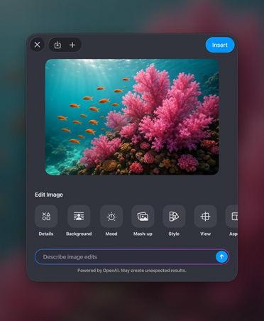
Advanced image creation and editing.
Make and remix images, illustrations, and graphic elements right in your documents.
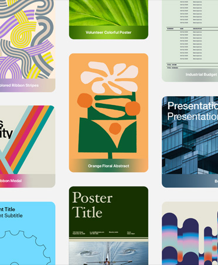
Get a head start with beautiful templates and themes.
Create everything from event posters to storyboard decks.
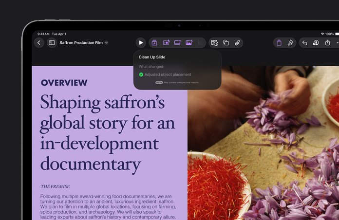
Clean up your slides.
Keynote can automatically correct layout, typography, and alignment issues.
Complete your sheet with Magic Fill.
Get suggested contents or generate formulas for empty cells.
Questions? Answers.
How do I download Apple Creator Studio?
You can download all the apps included in Apple Creator Studio from the App Store. It comes with Final Cut Pro, Logic Pro, and Pixelmator Pro as well as Motion, Compressor, MainStage, and other tools.
Which apps are included in Apple Creator Studio?
Apple Creator Studio gives subscribers access to a suite of creative apps designed for video, music, and image editing and creation.
Can I still use my existing versions of Final Cut Pro, Logic Pro, Pixelmator Pro, MainStage, Motion, and Compressor?
Yes. If you already own Final Cut Pro, Logic Pro, Pixelmator Pro, MainStage, Motion, or Compressor, you can continue using them.
Will I still be able to use Keynote, Pages, Numbers, and Freeform for free?
Yes. You can continue using Keynote, Pages, Numbers, and Freeform for free.
What happens to projects and content I created if my subscription ends?
All the projects and content you create with an active subscription remain licensed in the context of your original creation.
Which hardware and OS version do I need to use Apple Creator Studio?
For the optimal experience, full functionality is available with macOS 26, iPadOS 26, and iOS 26 and later.
Can I share Apple Creator Studio with my family?
Yes, a standard Apple Creator Studio subscription can be shared with up to five other family members using Family Sharing.
What are the requirements for using the intelligence features in Apple Creator Studio?
Apple Creator Studio includes intelligence features that are exclusive to subscribers.